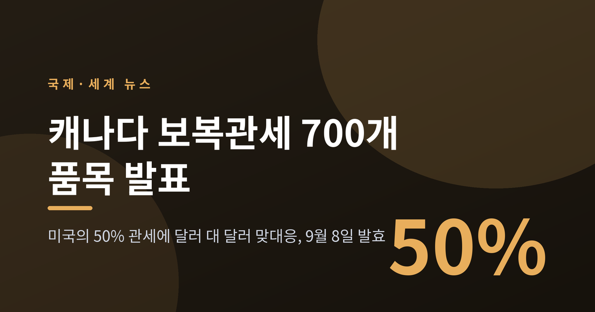
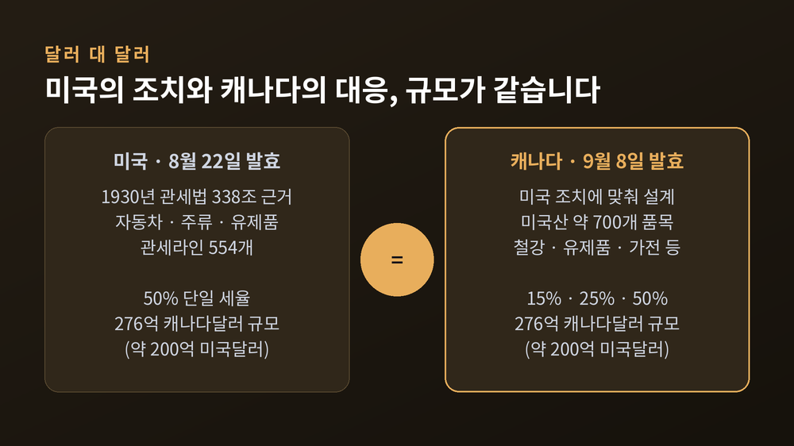
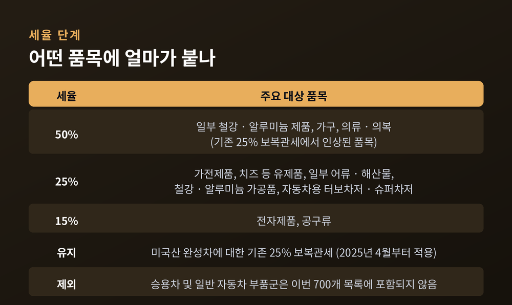
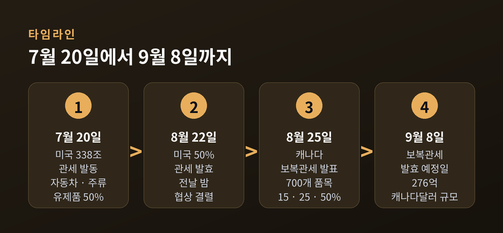
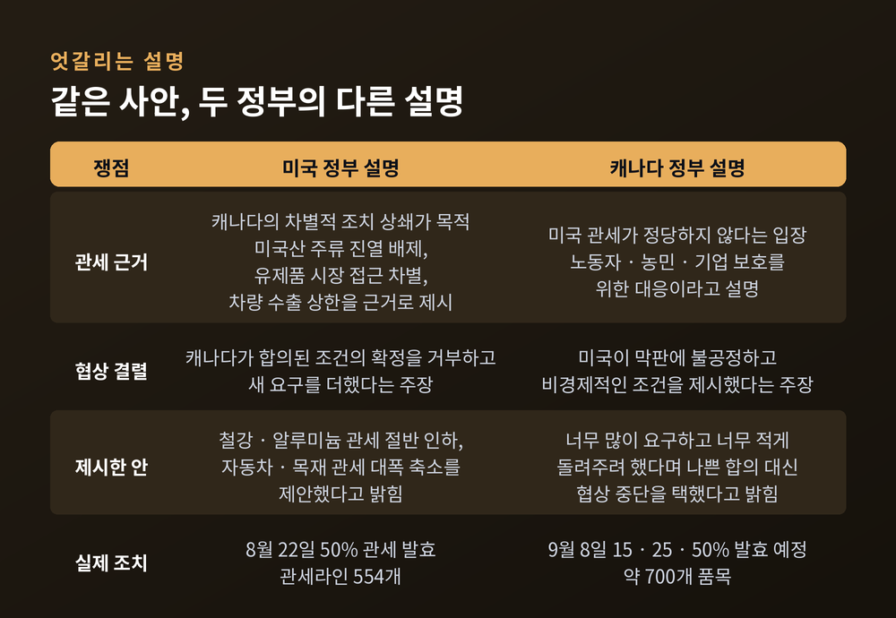
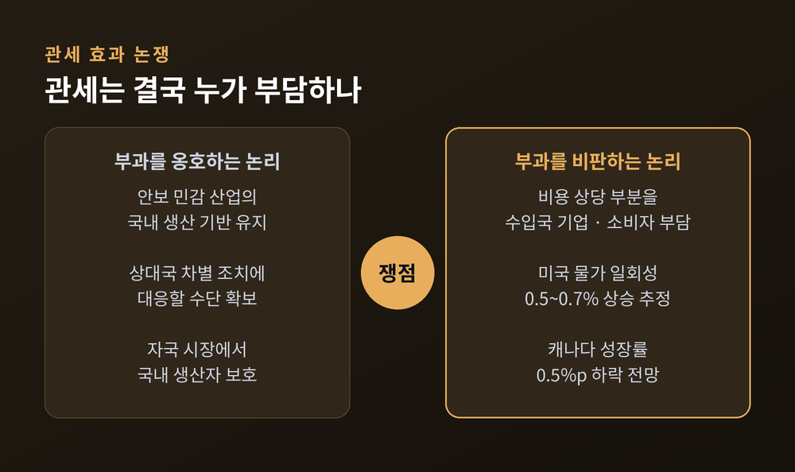
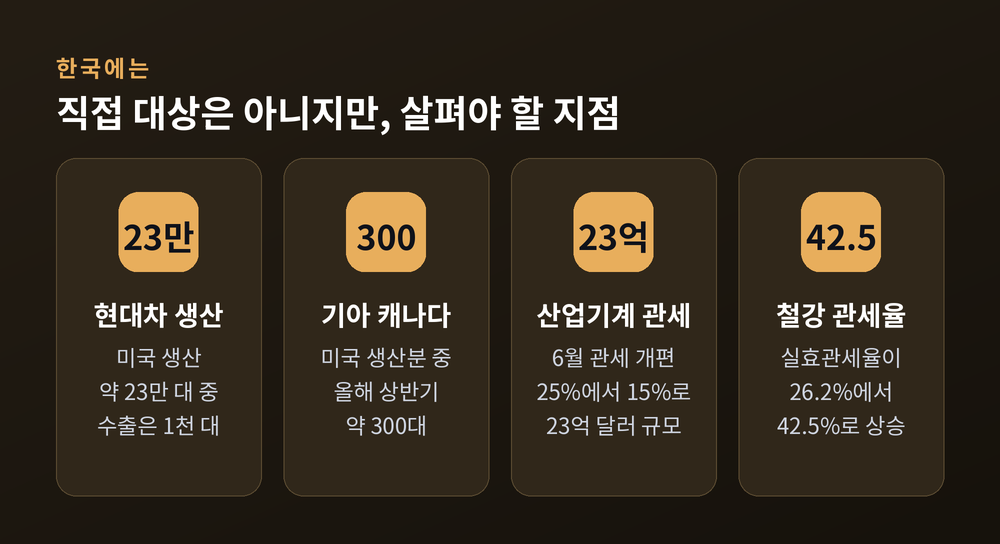

캐나다 보복관세 700개 품목 발표, 9월 8일부터 무엇이 달라지나

이번 글에서는 캐나다가 미국산 제품에 매기기로 한 보복관세를 정리해 보겠습니다. 발표 내용과 배경, 양국 정부의 서로 다른 설명, 그리고 한국 경제에 어떤 의미가 있는지까지 차례로 살펴보겠습니다.
세 줄 요약
- 캐나다 정부가 현지시간 8월 25일, 미국산 약 700개 품목에 15·25·50% 보복관세를 발표했습니다. 발효일은 9월 8일입니다.
- 대상 규모는 276억 캐나다달러(약 200억 미국달러)로, 미국이 8월 22일부터 캐나다산 제품에 매긴 50% 관세와 같은 크기입니다.
- 미국은 캐나다의 차별적 조치에 대한 대응이라 설명하고, 캐나다는 미국이 막판에 무리한 조건을 요구했다고 설명합니다. 양측 주장은 정면으로 엇갈립니다.
무슨 일이 있었나
캐나다 재무부가 현지시간 2026년 8월 25일 대미 보복관세를 공식 발표했습니다. 한국 매체들이 8월 26일자로 전한 그 소식입니다.
핵심은 세 가지입니다. 대상은 미국산 약 700개 품목, 세율은 15%·25%·50% 세 단계, 발효는 9월 8일입니다.
관세가 걸리는 수입액은 276억 캐나다달러입니다. 미국달러로 환산하면 약 200억 달러입니다. 기사마다 200억 달러와 276억 달러가 섞여 나오는 이유는 여기에 있습니다. 서로 다른 규모가 아니라 통화 표기가 다를 뿐입니다.
이 숫자는 우연이 아닙니다. 미국이 8월 22일부터 캐나다산 제품에 매긴 50% 관세의 규모가 바로 276억 캐나다달러였습니다. 캐나다 재무부는 이번 조치를 "달러 대 달러, 세율 대 세율"의 대응이라고 표현했습니다. 규모도 세율도 그대로 되돌려준다는 뜻입니다.

어떤 품목에 얼마가 붙나
세율은 품목마다 다릅니다. 미국이 해당 품목에 매긴 세율에 캐나다가 맞추는 방식입니다.
가장 높은 50%가 붙는 것은 일부 철강·알루미늄 제품과 가구, 의류입니다. 철강·알루미늄은 원래 25% 보복관세가 걸려 있던 품목이었습니다. 미국이 50%로 올리자 캐나다도 50%로 따라 올린 셈입니다.
25%는 가전제품, 치즈를 비롯한 유제품, 일부 어류·해산물, 철강·알루미늄 가공품에 적용됩니다. 15%는 전자제품과 공구류에 붙습니다. 캐나다 현지 보도에서는 화장품과 스마트폰, 주방가전 같은 생활 밀착 품목도 목록에 들어간 것으로 전해졌습니다.
눈여겨볼 대목이 하나 있습니다. 이번 700개 목록에 승용차와 일반 자동차 부품군은 들어가지 않았습니다. 자동차용 터보차저와 슈퍼차저 정도가 25% 대상에 포함됐을 뿐입니다. 다만 캐나다가 지난해 4월부터 미국산 완성차에 매겨 온 25% 보복관세는 그대로 유지됩니다.
캐나다 정부는 이번 관세의 목적이 세수 확대가 아니라 국내 산업 보호라고 설명합니다. 자국 생산자가 캐나다 시장에서 미국산과 겨룰 때 불리하지 않게 하겠다는 것입니다.

관세만 발표한 것이 아니었습니다
같은 날 캐나다 정부는 75억 캐나다달러 규모의 국내 지원 패키지도 함께 내놨습니다. 미국 관세가 시작된 이후 캐나다가 내놓은 누적 지원액이 약 250억 캐나다달러인데, 여기에 더해지는 금액입니다.
구성은 이렇습니다. 중소기업 유동성 지원에 15억 캐나다달러, 캐나다기업개발은행의 신규 유동성 지원에 5억 캐나다달러, 새로 만드는 다변화 기금에 20억 캐나다달러가 배정됐습니다. 가장 큰 몫인 35억 캐나다달러는 노동자와 고용주 지원에 쓰입니다. 고용보험 요건을 한시적으로 풀고, 직장 내 재훈련 프로그램을 새로 만드는 데 들어갑니다.
관세는 상대를 겨냥한 조치이고, 지원책은 자국 안쪽을 향한 조치입니다. 두 가지가 한 발표에 묶여 나왔다는 점이 이번 조치의 성격을 보여줍니다.
어쩌다 여기까지 왔나
시간을 조금 되감아 보겠습니다.
시작은 7월 20일입니다. 미국이 1930년 관세법 338조를 근거로 캐나다산 자동차·주류·유제품에 각각 50% 추가 관세를 부과했습니다. 관세라인 554개, 규모로는 약 200억 미국달러였습니다. 하키스틱과 와인, 시멘트 같은 품목도 목록에 들어갔습니다.
338조라는 조항이 낯설게 느껴지실 텐데요. 그럴 만합니다. 1930년에 만들어진 이 조항이 실제 관세 부과에 쓰인 것은 이번이 처음입니다. 별도의 조사나 청문 절차 없이 대통령 포고만으로 최대 50% 관세를 매길 수 있고, 다른 관세와 달리 적용 기한 제한도 없습니다.
그 사이 양국은 협상을 이어갔습니다. 관세 발효일은 8월 19일에서 8월 22일로 사흘 미뤄졌습니다. 협상에 시간을 준 셈입니다.
그러나 8월 21일 밤 협상이 결렬됐습니다. 자동차 관세와 캐나다 철강·알루미늄·목재 산업 문제가 끝까지 걸림돌이었던 것으로 전해집니다. 자동차 관세를 25%에서 15%로 낮추는 안이 논의됐지만, 그 수준이 충분한지를 두고 이견이 좁혀지지 않았습니다.
이튿날인 8월 22일 미국의 50% 관세가 발효됐고, 사흘 뒤 캐나다가 맞대응 카드를 꺼냈습니다.

양측은 각자 이렇게 말합니다
이 대목은 조심스럽게 다뤄야 합니다. 두 정부의 설명이 정면으로 어긋나기 때문입니다.
미국 무역대표부는 7월 관세 부과 당시, 캐나다가 미국산 주류를 매장 진열대에서 치웠고 유제품 시장에서 유럽연합에 더 나은 접근을 줬으며 미국으로 생산을 옮긴 기업의 대캐나다 차량 수출에 상한을 뒀다는 점을 근거로 들었습니다. 차별적 조치에 대한 상쇄라는 논리입니다. 협상 결렬 이후에는 캐나다가 합의된 조건을 최종 확정하기를 거부했고 새로운 요구를 더했다는 입장을 밝혔습니다. 철강·알루미늄 관세를 절반으로 낮추고 자동차와 목재 관세도 크게 줄이는 안을 제시했다는 설명도 덧붙였습니다.
캐나다 재무부의 설명은 다릅니다. 미국이 막판에 캐나다에 이롭지 않은 새 조건을 제시했고, "너무 많이 요구하고 너무 적게 돌려주려 했다"는 것입니다. 그래서 나쁜 합의를 받아들이는 대신 협상을 중단했다고 밝혔습니다. 마크 카니 총리는 8월 22일 기자회견에서 미국의 조치를 강한 표현으로 비판했습니다. 다만 그 표현은 비유였고, 실제 무력 충돌을 뜻한 것은 아닙니다.
어느 쪽 설명이 사실에 가까운지는 제3자가 확인하기 어렵습니다. 협상 내용은 공개되지 않았습니다. 지금 확인할 수 있는 것은 양측이 서로를 결렬의 원인으로 지목하고 있다는 사실뿐입니다.

왜 중요한가
이 사안이 두 나라의 다툼으로만 끝나지 않는 이유가 있습니다.
첫째는 USMCA입니다. 미국·멕시코·캐나다 협정은 세 나라를 하나의 생산 블록으로 묶어 온 틀입니다. 2026년은 이 협정의 공동 검토가 예정된 해였습니다. 7월에 검토 회의가 열렸지만 미국 행정부는 협정을 현행 형태로 연장하는 데 동의하지 않았습니다. 개정 후 연장이 유력하다는 관측이 많지만, 확정된 것은 없습니다. 협정 자체가 흔들리는 국면에서 회원국끼리 50% 관세를 주고받고 있는 셈입니다.
둘째는 338조라는 전례입니다. 조사도 청문도 없이 포고만으로 발동되고 기한 제한도 없는 수단이 96년 만에 처음 쓰였습니다. 한 번 열린 문은 다음에 더 쉽게 열립니다. 미국이 다른 교역 상대에게 같은 카드를 꺼내지 않으리라는 보장은 없습니다.
셋째는 협상 방식의 문제입니다. 예전에는 관세가 협상 테이블에 올리는 카드였습니다. 지금은 협상이 깨지면 곧바로 관세로 넘어갑니다. 두 나라 사이의 시차가 사흘이었습니다.
관세는 결국 누가 부담하나
관세의 효과는 오래된 논쟁거리입니다. 어느 한쪽 말만 옮기면 균형을 잃습니다.
부과를 옹호하는 쪽의 논리는 이렇습니다. 철강·알루미늄·자동차처럼 안보와 맞닿은 산업에서 국내 생산 기반을 지켜야 하고, 상대국의 차별적 조치에는 대응 수단이 필요하다는 것입니다. 캐나다 정부의 논리도 방향은 같습니다. 자국 시장에서 국내 생산자가 밀리지 않게 하는 보호 장치라는 설명입니다.
반대편의 지적도 분명합니다. 관세 비용의 상당 부분을 수입국의 기업과 소비자가 떠안는다는 것입니다. 미국 수입업자와 소비자가 관세 부담의 96%를 흡수한다는 분석이 인용되고 있습니다. 미국 소비자물가에 일회성으로 0.5~0.7% 상승 요인이 된다는 추정도 있습니다.
캐나다 쪽 부담도 작지 않습니다. 뱅크오브몬트리올은 이번 신규 관세가 캐나다 경제성장률을 0.5%포인트 깎아낼 것으로 전망했습니다. 미국의 50% 관세 대상은 캐나다의 대미 수출 가운데 약 5% 규모지만, 가구와 섬유는 대미 수출의 절반 가까이가 걸려 있어 체감 충격이 큽니다. 자동차와 부품 생산에 직접 의존하는 일자리만 12만 개, 캐나다 고용과 GDP의 0.7%에 해당합니다.
캐나다 정부도 보복관세가 일부 기업과 소비자의 비용을 높일 수 있다는 점은 인정합니다. 다만 경제 전체에 미치는 영향은 제한적일 것으로 봅니다. 캐나다 경제가 두 분기 위축 뒤 막 회복 궤도에 올라선 시점이라, 이번 재격화가 그 흐름을 되돌릴 수 있다는 우려가 나옵니다.

한국에는 어떤 의미인가
한국 기업이 이번 조치의 직접 대상은 아닙니다. 보복관세는 미국산 제품에 붙기 때문입니다.
자동차가 대표적입니다. 현대차와 기아는 미국 공장 생산분을 대부분 미국 안에서 팔고, 캐나다에서 파는 차량은 한국에서 만들어 보냅니다. 현대차의 2026년 미국 생산 물량은 약 23만 대인데 미국 공장에서 해외로 나간 물량은 1,000대 안팎이었습니다. 기아가 미국에서 만들어 캐나다로 보낸 차량은 올해 상반기 약 300대에 그쳤습니다. 한국에서 생산해 캐나다로 가는 차는 미국산이 아니므로 이번 관세 대상이 아닙니다.
다만 안심할 상황은 아닙니다. 북미는 미국·캐나다·멕시코가 부품 조달망으로 촘촘히 엮인 시장입니다. 갈등이 길어지면 공급망 계획 자체를 다시 짜야 할 수 있습니다.
반사이익을 기대하는 시선도 있습니다. 캐나다산이 미국 시장에서 고관세로 밀리면 한국과 일본 제품에 기회가 생긴다는 관측입니다. 그러나 이는 어디까지나 전망입니다. 관세로 미국 내 물가가 오르고 산업 경쟁력이 약해지면 수요 자체가 줄어 한국 수출에도 부담이 됩니다. 국내에서는 이번 갈등이 한국 기업의 대미 투자 일정에 영향을 줄 수 있다는 우려도 나왔습니다.
한국이 처한 관세 환경도 함께 봐야 합니다. 미국은 지난 6월 철강·알루미늄 파생상품 관세를 개편해 한국과 일본, 영국, 유럽연합 등 관세 합의국의 일부 이동식 산업기계 세율을 25%에서 15%로 낮췄습니다. 산업통상자원부는 이로 인해 관세 부담이 줄어드는 대미 수출 품목 규모를 약 23억 달러로 추산했습니다. 반면 철강 및 철강제품의 실효관세율은 지난해 2분기 26.2%에서 올해 1분기 42.5%까지 올랐다는 분석이 있습니다.

앞으로 무엇을 지켜봐야 하나
세 가지를 보시면 됩니다.
첫째는 9월 8일입니다. 캐나다 관세가 실제로 발효되는지, 그 전에 협상이 재개되는지가 첫 갈림길입니다. 3일 유예 같은 조정이 다시 나올 가능성도 배제할 수 없습니다.
둘째는 USMCA 검토의 향방입니다. 세 나라가 협정을 수정해 연장할지, 만료시킬지가 북미 생산 구조 전체를 좌우합니다. 미국과 멕시코는 별도 양자 라운드를 이어가고 있어, 미·멕 트랙과 미·캐 트랙이 갈라질 수 있다는 점도 변수입니다.
셋째는 338조의 확산 여부입니다. 이 수단이 캐나다에만 쓰이고 말지, 다른 상대에게도 적용되는지에 따라 세계 통상 환경의 온도가 달라집니다.
솔직히 말씀드리면, 이 사안은 어느 쪽이 옳다고 정리하기 어렵습니다. 두 나라 모두 자국 산업과 노동자를 지키겠다는 명분을 들고 있고, 그 명분 자체를 부정하기는 힘듭니다. 다만 명분이 부딪칠 때 비용을 치르는 쪽은 대체로 협상 테이블 밖에 있는 사람들입니다.
정리하면 이렇습니다.
캐나다는 미국이 매긴 만큼을 같은 세율로 되돌려주기로 했고, 그 시계는 9월 8일에 멈춰 있습니다. 규모는 276억 캐나다달러, 품목은 700개, 세율은 15·25·50%입니다.
숫자보다 오래 남는 것은 방식입니다 — 협상이 깨진 자리를 관세가 곧바로 대신했다는 사실 말입니다.
이 흐름이 어디까지 갈지 물으신다면, 지금으로서는 9월 8일 이후를 지켜봐야 한다고 답하겠습니다.
※ 이 글은 공개된 정부 발표와 언론 보도를 정리한 정보 제공 목적의 글이며, 특정 종목이나 자산에 대한 투자 권유가 아닙니다. 관세 정책은 수시로 변경될 수 있으므로, 실제 거래나 투자 판단에 앞서 각국 정부의 공식 고시를 확인하시기 바랍니다.